Polargraph - vClamp
כפי שציינתי בפוסט הזה: Polargraph - vSappe, בניתי ב-2016 צייר כזה - לא תיעדתי והוא פורק. הגיע הזמן לבנות אחד נוסף, לתעד ולהשאיר אותו מורכב.
יש ברשותי זוג מנועי צעד (Nema 17), תושבות, ברגים, כבלים, רצועות תזמון (טיימינג) וגלגלות לרצועות תזמון.
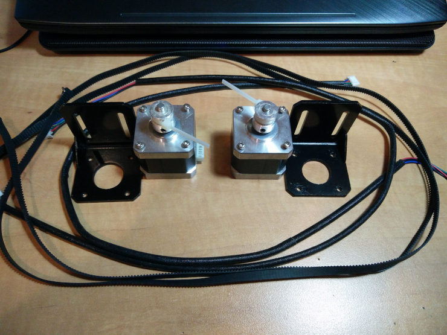
יש גם ארדואינו ו-shield מתאים - CNC Shield V3.0 - כחלק מהמארז מודולים שבניתי.
חסר: ספק כוח 12 וולט. אני אקנה של 5 אמפר.
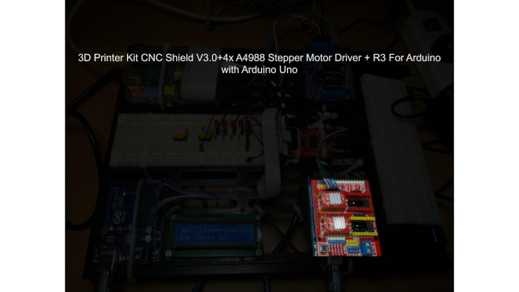
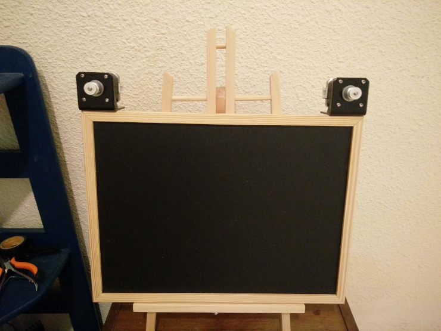
* עדכון - לאחר מספר ימים - יש ספק כוח 12 וולט.
המשכתי בבניה של הראש צייר. אילתור מחפצים שמצאתי בבית - כרגיל.
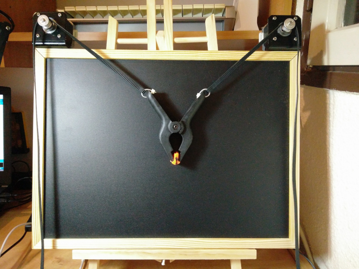
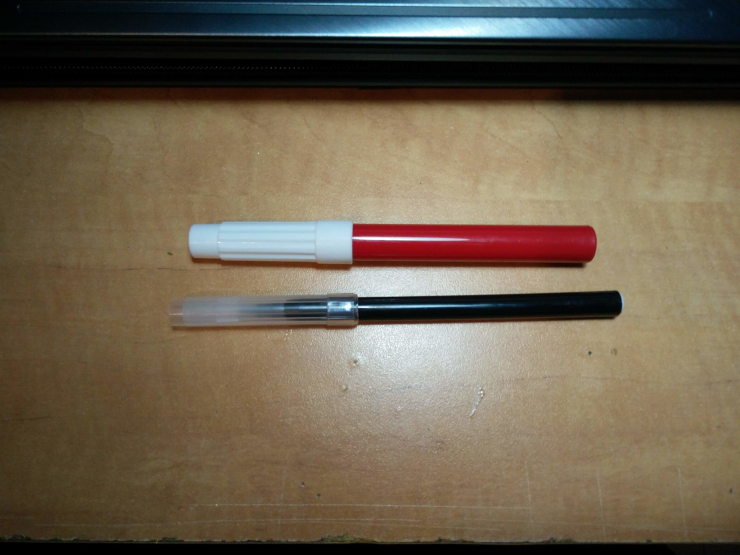
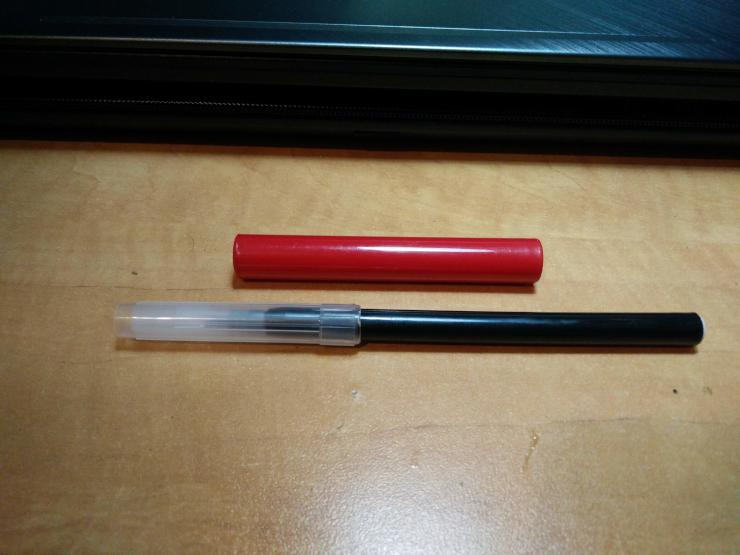
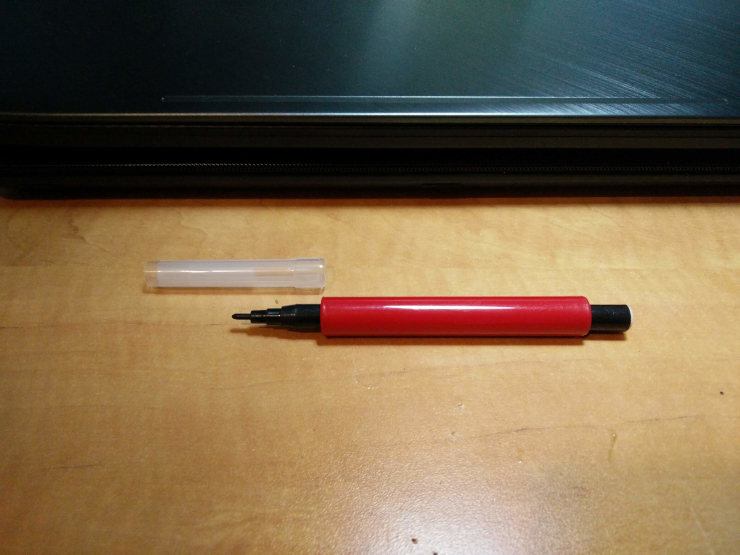
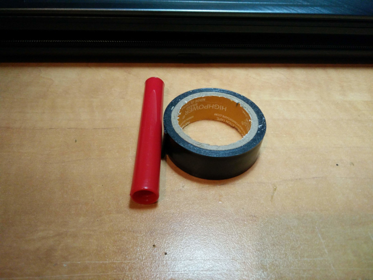
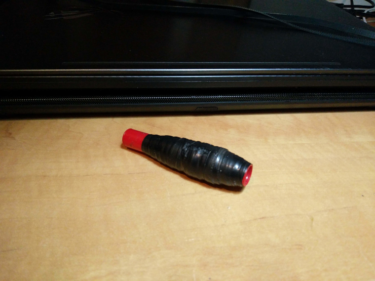
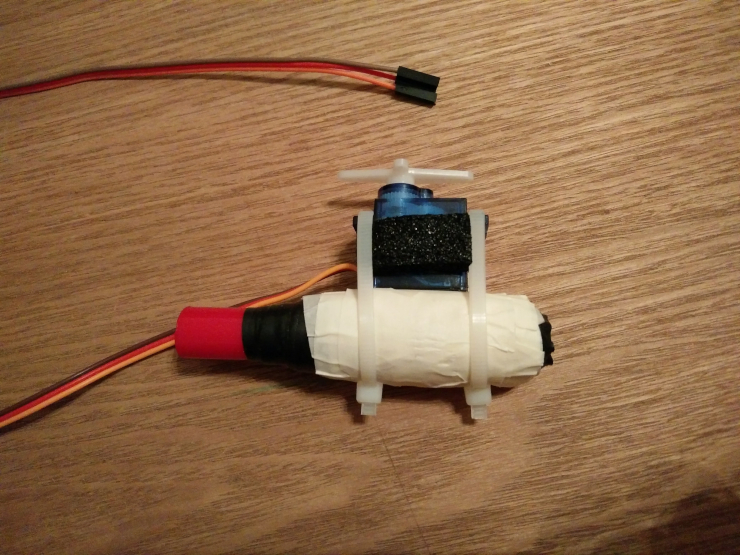
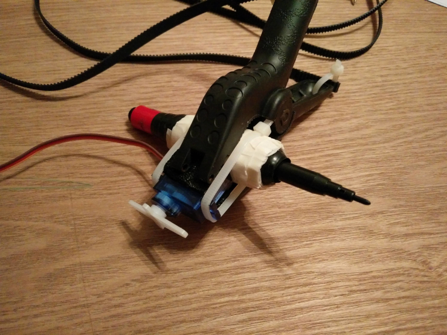
* התפקיד של הסרוו - ברגע שאוסיף אורך לזרוע שלו - הוא לדחוף את הצייר מהלוח. אתם תראו בהמשך. ואלו הפעולות היחידות שאפשר לעשות עם מנועי סרוו מהסוג הזה (מיקרו, הזולים, מנגנון פלסטיק וכו'). אי אפשר להגיע איתם לדיוק, אם מחפשים דיוק.
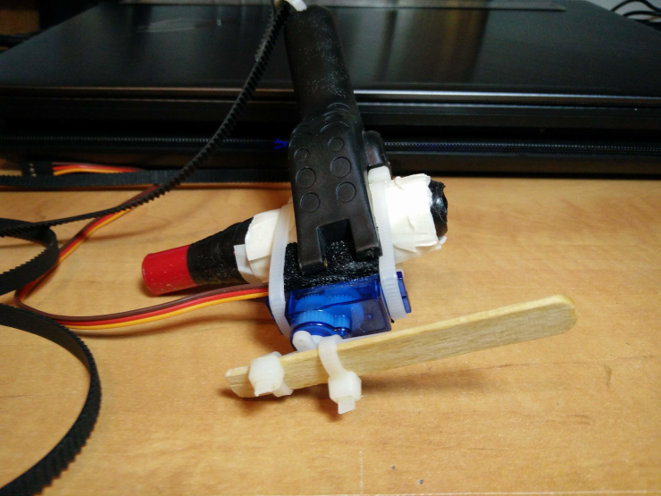
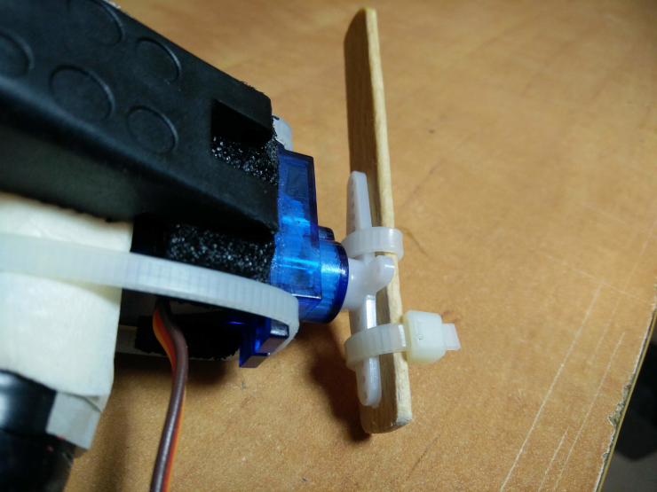
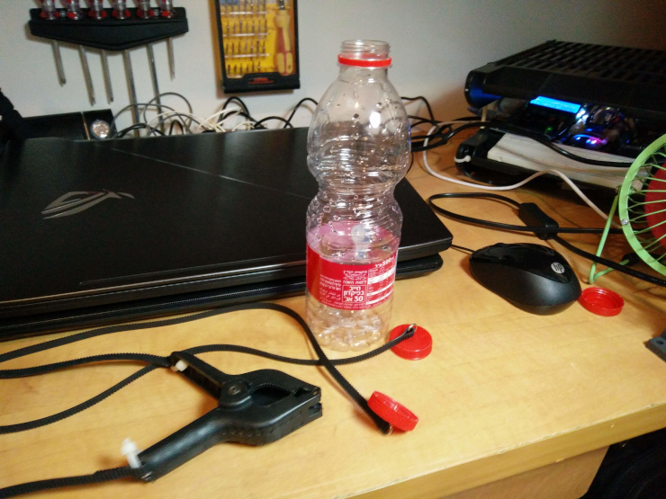
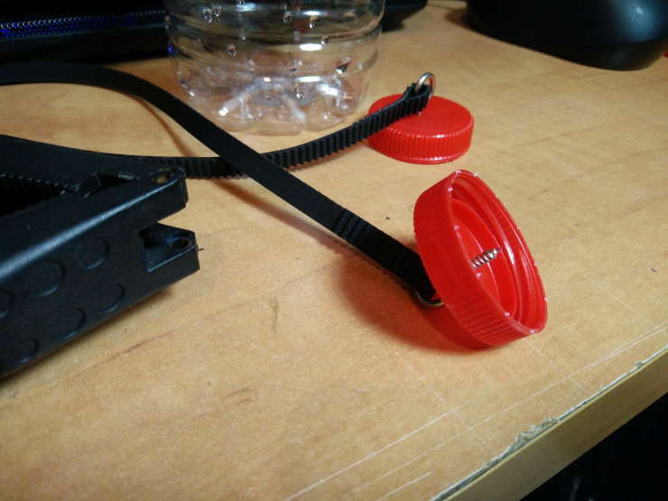
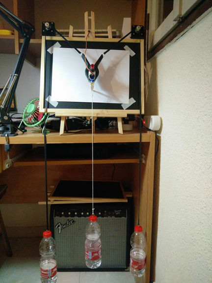
9-7-19 23:00
זהו, ה-Polargraph מוכן. נשאר לחבר כבלים ולהתעסק עם תוכנה.
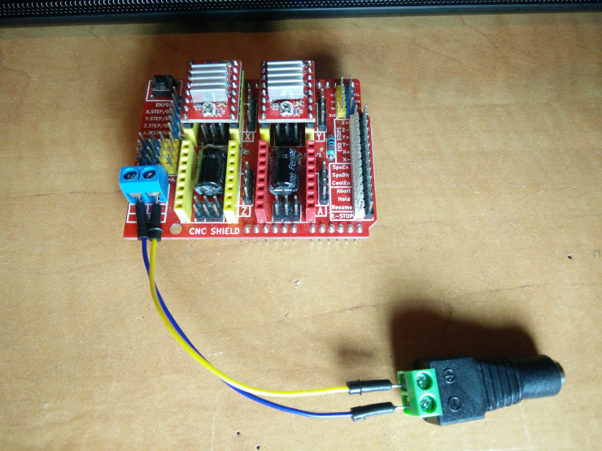
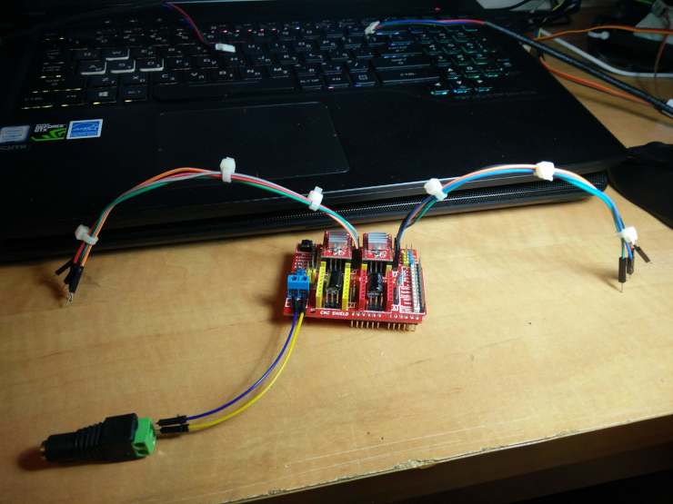
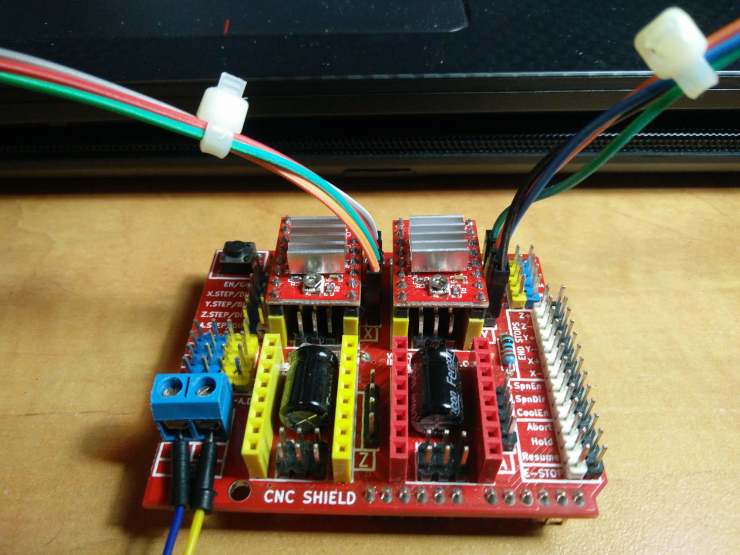
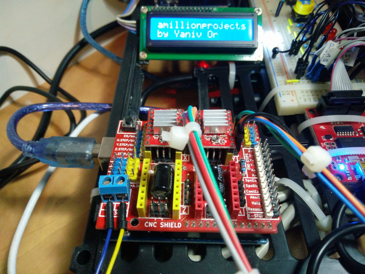
מבחינת תוכנה, יש אחת ספציפית ל-Polargraph. השתמשתי בה בפעם הקודמת:
https://github.com/euphy/polargraphcontroller
אבדוק גם אחרות.
הפרוטוקול בו נהוג להשתמש ב-CNC נקרא G-Code וישנו parser נפוץ שנקרא GRBL. בכל מקרה, ללא קשר לשימוש בתוכנות ופרוטוקולים נפוצים, אני מעוניין ללמוד וללמד את התיאוריה המתימטית מאחורי רובוט מסוג כזה. לכן, אכתוב גם קוד מאפס וכולי.
* הערה קטנה: בהמשך אני מתקין grbl ומצאתי טעות לוגית במה שעשיתי. ה-grbl מקבל פקודות x, y, z במערכת קרטזית ואילו ה-Polargraph עובד במערכת בי-פולרית. בכל מקרה, אני משאיר את הטעות הזאת ואתקן בהמשך. אני צריך לבדוק אם יש אפשרות לקנפג את grbl למערכת פולרית.
התקנת GRBL על הארדואינו
עשיתי clone ל:
https://github.com/gnea/grbl
העתקתי את התיקיית grbl הפנימית (עם ה-source קוד ו-examples) ל-Arduino/libraries
פתחתי את התוכנה של Arduino ופתחתי את הסקריפט: Examples/grbl/grblUpload
העליתי את הקוד לארדואינו UNO. פתחתי את ה-Serial Monitor וראיתי בעיה בקידוד של הטקסט (סימני שאלה, ג'יבריש). שיניתי את ה-baud rates עד שקיבלתי הודעה שאפשר לקרוא אותה:
Grbl 1.1g ['$' for help]
אגב, ה-baud הוא 115200.
אני אזכר קצת בפקודות ל-grbl ואעדכן.
https://github.com/grbl/grbl/wiki/Interfacing-with-Grbl
עדכון 10/7/19 הפקודות הבסיסיות ביותר כדי להניע את המנועים הם: x, y, z... וערך מספרי.
x2 x0 y1 z3 y3 etc...
אפשר לראות כי ניתן לשלוח בשורה אחת יותר מהוראה אחת. הוראות באותה שורה מתבצעות במקביל, לא אחת אחרי השניה. השורות מתבצעות בצורה טורית, אחת אחרי השנייה.
שורה בה מופיעה יותר מהוראה אחת למנוע, תחזיר שגיאה. שורה כזאת, למשל, לא חוקית:
x0 y1 x2
מה מייצג הערך המספרי הזה - מה זה אומר 1, למשל - את זה אפשר לקנפג ע"י שליחת פקודות מסויימות ל-grbl. בהמשך.
אוקיי, נעבור להדגמה קצרה.
דבר ראשון, אני רוצה לאפס את המנועים ולהחזיר אותם למצב ההתחלתי. הורדתי את הראש צייר כולל הרצועות טיימינג שלו מהגלגלות וב-grbl שלחתי x0 y0. החזרתי את הראש צייר ומיקמתי אותו, ידנית, במרכז הלוח. שרירותי, כדי שיהיה טווח עבודה.
בסרטון, אני שולח את סדרת הפקודות הבאות, כל אחת בתורה:
x1 y1 x0 y0 x-1
בהמשך, שמתי לב שהמנוע השמאלי משמיע צלילי חריקה. נשמע כאילו צריך לשמן אותו. חיפשתי קצת בגוגל ולא מצאתי הסברים על שימון מנועי צעד - כי אין, לא משמנים מנועי צעד. זה גם קורה רק כשמעבירים אליו פקודה להסתובב. זאת אומרת, כשמסובבים ביד - התנועה חלקה ביותר.
אחרי זמן מה במבט חטוף על ה-cnc shield קלטתי את הפוטנציומטרים שעל המודולים הקטנים (אלה עם הצלעות קירור עליהן) ונזכרתי מה צריך לעשות. צריך לעשות כיוונון עדין (fine tuning) של המתחים שמגיעים למנועים, עד שהחריקות מפסיקות והצליל נשמע חלק.
כדי שיהיה נוח לטפל בעניין הנ"ל, יש צורך ברצף פקודות ארוך מספיק כך שאוכל לסובב את הפוטנציומטרים עד שתהליך הכיוונון יסתיים. מה שאני צריך לעשות זה לשלוח קובץ הוראות ל-Serial Console ואת זה אי אפשר לעשות דרך הממשק הגרפי של ארדואינו.
יש כמה תוכנות cli (בלינוקס). בתור חובב screen, אשתמש בתוכנה הזאת. אני לא ארחיב פה על השימושים הרבים ב-screen וכולי. מבטיח להקדיש פוסט מלא בעניין.
בטרמינל כתבתי:
screen -S cnc-shield /dev/ttyACM1 115200
ובצורה הזאת, אני מחובר ל-device הרצוי. נתתי ל-session שם: cnc-shield כדי שאוכל למצוא אותו בקלות בהמשך (במקום להשתמש בשם שנוצר אוטומטית או ב-pid).
* בהמשך אערוך את הסרטון, בינתיים הסבר קצר:
0:17 - כתבתי את הפקודה, לחצתי Enter - מסך ריק. סביר להניח שיכולתי בשלב הזה פשוט לשלוח פקודות וזה היה עובד אבל רציתי לראות את ה-banner של grbl בשביל ההרגשה הטובה. לחצתי על כפתור ה-reset בארדואינו והבאנר הופיע.
0:21 - הקלדתי x0 (לא מופיע על המסך) ולחצתי Enter. המנוע הסתובב והופיע ok על המסך.
0:25 - הקלדתי y0 ו-Enter. המנוע השני (השמאלי) הסתובב והופיע ok.
0:28 - הקלדתי x1 ו-Enter. המנוע הסתובב והופיע ok.
0:30 - הקלדתי y1 ו-Enter. המנוע הסתובב והופיע ok.
0:40 - הרצתי screen -ls כדי להראות שהסשן חי.
יופי, זה עובד. נכין קובץ להעלאה עם סדרת הוראות למנועים ולפני שנעבור לטעינת הקובץ, הסבר קצר על אחת התכונות של screen והשימוש בה - למי שלא מכיר.
ברגע שאנחנו כותבים screen בטרמינל, נפתח session חדש. גם אם נסגור את החלון של הטרמינל, הסשן עדיין קיים ופרוססים או סקריפטים שרצים בסשן הזה ימשיכו לרוץ.
אם נפתח שוב טרמינל ונכתוב:
screen -ls
נוכל להיווכח שה-screen שלנו, הקודם, עדיין קיים:
There is a screen on: 9050.pts-1.yaniv-Strix-15-GL503GE (12/07/19 00:21:03) (Detached) 1 Socket in /run/screen/S-yaniv.
אז לאחר שהדברים הללו נאמרו, יש שתי שיטות להעלאת קובץ ל-screen. מתוך ה-session ומחוצה לו. בתוך הסשן, כשאנחנו בטאב של ה-grbl נקליד:
Ctrl-a + :
* זאת הדרך להיכנס למצב פקודה ב-screen בלי קשר להעלאת קובץ
נטען את הקובץ ל-buffer:
:readreg p [filename]
ונעביר את התוכן ל-grbl:
:paste p
מחוץ לסשן בחלון נפרד:
screen -S cnc-shield -X readreg p [filename] screen -S cnc-shield -X paste p
מחוץ לסשן זה מאוד נוח. ה-screen רץ ברקע, אין צורך להתחבר אליו, רק לשלוח data.
יצרתי קובץ עם מידע לסיבוב המנועים, כל אחד בנפרד ושיחקתי עם הפוטנציונטרים עד שהגעתי למצב הרצוי. המידע הבא והסרטון מתייחסים למנוע השמאלי (y). אותו תהליך עשיתי עם x.
y0.0 y0.1 y0.2 y0.3 y0.4 y0.5 y0.6 y0.7 y0.8 y0.9 y1.0
* אין כמו הסאונד של מנוע צעד איכותי ;)
הדבר הבא שעשיתי היה להתקין תוכנה עם GUI. התקנתי את bCNC שמאפשרת חיבור סריאלי לקונטרולר ושליטה ב-grbl. יש אפשרות להעלות קבצים בפורמטים שונים, בין היתר gcode, שזה הפורמט שעבדתי איתו קודם לכן. אגב, היא לא מתאימה מאה אחוז לרובוט שלנו, הסבר בהמשך.
התקנה פשוטה ביותר:
pip2 install --upgrade bCNC python2 -m bCNC
הפקודה האחרונה פותחת חלון GUI. הנה סרטון קצר:
שימו לב: ב-bCNC, השרטוט מוצג על המסך במערכת צירים קרטזית לעומת מערכת הצירים ב-Polargraph שהקואורדינטות בהן - אם אני לא טועה - הן קואורדינטות קוטביות (Bipolar coordinates). לכן, הפיצ'ר הזה לא שימושי לנו. בכל אופן, לצורך טעינת ה-gcode, זה מספיק בשבילי כרגע.
הסבר תיאורטי מעמיק בהמשך - אני חייב להסיר חלודה ולשבת על זה קצת. מה שחשוב לדעת כרגע זה שהרובוט הזה מצייר בקשתות, אם אפשר לומר בצורה כזאת, כשכל מנוע הוא מרכז של מעגל. זאת הצורה ה"טבעית" שלו. כדי שיצא, למשל, קו אנכי ישר - המנועים חייבים לעבוד בסנכרון מושלם. לעומת מערכת הצירים הקרטזית (שולחן XY), שבה דווקא ליצור מעגל זה "מסובך" יותר - פחות טבעי. אני מקווה שזה ברור. *@&* להכין שרטוטים, אנימציה וכו'
היוצר - סנדי נובל - זה שפיתח את הרובוט על בסיס הקטור ונתן לו את השם Polargraph כותב:
"הרובוט לא משתמש במערכת פולרית, אלא למעשה סוג של מערכת דו-זוויתית. הזוית של כל מיתר נקבעת ע"י האורך של שני המיתרים, לעומת הצבה של זווית ומרחק במערכת פולרית אמיתית. השם 'Polargraph' נשאר אך הוא לא מדוייק".
את עניין הציור בקשתות אפשר לראות בבירור פה (ה-flickr של סנדי נובל):
https://www.flickr.com/photos/euphy/sets/72157626497662024/
או בחיפוש בגוגל תמונות.
שימו לב למספר שיטות הציור שפותחו לרובוט מהסוג הזה. הרבה מהן מבוססות על צפיפות שונה של הקווים שיוצרת גוונים שונים.
בפעם הקודמת שבניתי מכשיר כזה, הורדתי את התוכנה המותאמת ובאמת נתתי לרובוט לצייר בשיטות השונות. אגב, יש אפשרות גם לציור וקטורי. הציורים יוצאים מדהימים.
בהמשך אתקין אותה - אבל כרגע מה שחשוב לי זה התאוריה, לכן אכתוב קוד בשלבים ונראה לאן אגיע.
המשך - תיקון הטעות שנוצרה
אני מתקן את השימוש ב-grbl ל-grbl-polar, שמתאים למערכת הבי-פולרית שלנו:
השלבים בסרטון:
git clone https://github.com/ilaro-org/grbl-polar.git cd grbl-polar/ make clean make grbl.hex avrdude -v -patmega328p -carduino -P/dev/ttyACM1 -b57600 -D -Uflash:w:grbl.hex:i
* תקנו אותי אם אני טועה, אין ב-GUI של ארדואינו אפשרות להעלות (לצרוב) קובץ hex - לכן אני משתמש ב-avrdude מה-cli.
נשאר לקנפג את grbl לפי המידות והמימדים של הרובוט אבל אני לא אעשה את זה עכשיו.
יש לנו grbl-polar - הוא יחכה בצד כי מה שאני רוצה לעשות עכשיו זה לחזור אחורה, לנקות את הארדואינו ולהתחיל לכתוב קוד מאפס.
אגב, עדיין לא חיברנו את המנוע סרוו, גם לשם נגיע.